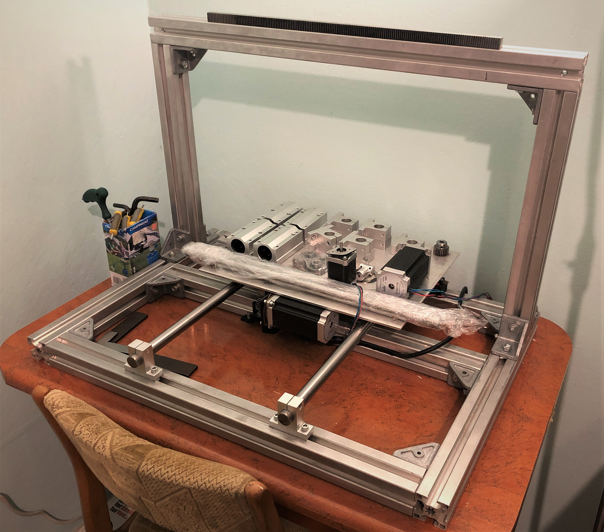

CNC Router - Part 2: Building hardware

Tracing holes with 3D printer
Biggest difference in new design as compared to 3D printer is X and Z carriage made from two 4mm thick steel plates.
This makes for really simple, fast and what's most important *straight* assembly - but only under circumstance that
all holes will be drilled precisely at locations.
Toolpaths were generated with Fusion 360 manufacturing module.
3D printer executing it's last GCODE before rebuild
Even slight imprecision between holes within one plate will cause linear bearings on shafts to bind and things to go
out of parallel in general - with no way of correcting that. I was well aware of that at the design state, but I
made an assumptions that I will be able to mark off all holes precisely by using existing 3D printer for it's last
task before it's disassemble.

Drilling and tapping
As a result there were total of 40 precisely located point marks on two steel plates, ready to be drilled and
tapped.
Hardware assembly

3D Printer disassembly
After ensuring that all components for which 3D printer was necessary were built, I began disassembling:

{kind=link}
CNC router frame
Immediately after disassembly, basic shape of new frame was put together.

Building Z gantry
Having all that finished, I started build XZ subassembly, putting together
steel plates, linear bearings, shafts (cut to length) and rest of parts,
following Fusion 360 design.

Completed XZ subassembly
Completed XZ assembly turned out surprisingly nice. It all took literally 20 minutes of work to put this together -
I am really not used to such kind of precision, using my now-gone, metal 3D printer for hole tracing was 10/10 idea.
Last step was to mount X gantry on linear shafts.